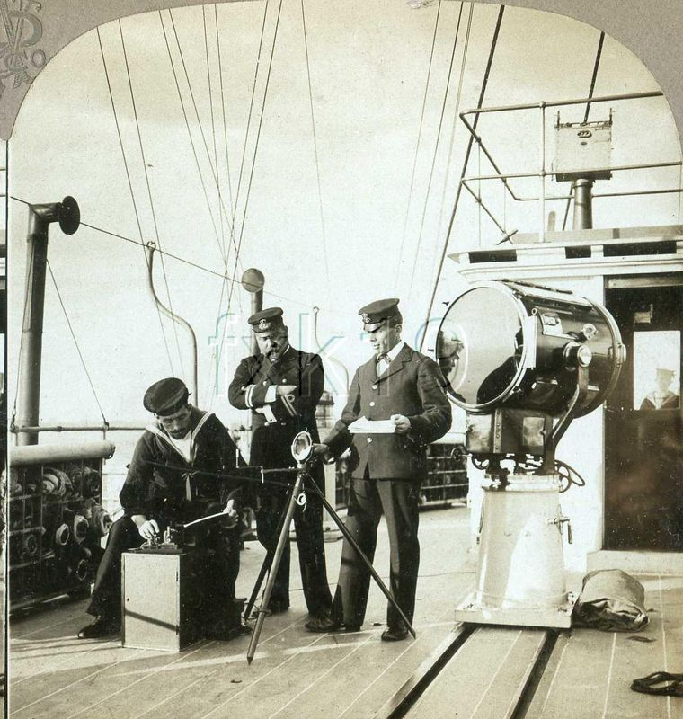
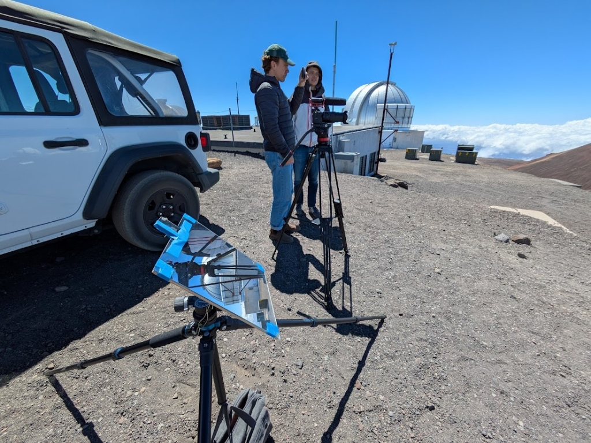

Orbital Heliography
Welcome. I am Ryu Izawa, and this is a documentation of our attempts at a pioneering, unexplored activity: Orbital Heliography.
By precisely tracking the relative positions of the Sun and Earth-orbiting satellites to within one-thousandth of a second, we use specialized surface mirrors to reflect solar light directly to orbital receivers. Through this optical synchronization, we are developing a basic framework for solar-based orbital communication.
Δθ = ± 2.5″

Heliography through Time
Heliography—signaling by flashing sunlight reflected from a mirror—has rich historical roots. Developed formally by Sir Henry Christopher Mance in 1869, the heliograph was widely adopted by military campaigns in the late 19th and early 20th centuries. Operating on Morse code, these systems allowed soldiers to communicate across vast desert vistas and mountain ranges, with flashing points visible up to nearly 200 miles away.
Our project leaps from these terrestrial signaling networks into orbital altitudes. Rather than communicating across mountain ridges, we project precise solar flashes upwards into the path of Low Earth Orbit ("LEO") and Middle Earth Orbit ("MEO") satellites, adapting this 19th-century solar technology for the era of modern satellite communication.
Orbital Intercept Physics
Tracking celestial angles and satellite velocities.
Thousandths-of-a-Second Tracking
Satellites in Low Earth Orbit (LEO) travel at speeds exceeding 7.5 kilometers per second. To hit a satellite's optical receiver with a reflected beam of sunlight, we must compute orbital intercepts with sub-millisecond precision. Even a deviation of 0.001 seconds corresponds to a positional error of 7.5 meters—meaning the reflected beam will completely miss the target.
Atmospheric Refraction Correction
We calculate real-time refraction parameters based on local meteorological readings. By compensating for atmospheric density variations, we steer our high-precision mirror mounts to correct coordinate errors.

The Research Team
Collaborating scientists and optical engineers pioneering the orbital heliography program.
| Researcher Name | Role & Focus |
|---|---|
| Ryu Izawa |
Principal Orbital Dynamicist, Heliographer
Trajectory calculations & precision targeting arrays.
|
| Anthony Goddard |
Principal Cartographer, Heliographer
Topographic mapping & solar vector alignment.
|
| Aamuro Kanda |
Documentarian, Director
Expedition cinematography & narrative telemetry records.
|
| Reese Glick |
Documentarian, Producer
Remote site logistics & media archive coordination.
|
| Alex Buysse |
Director of Photography, Expeditionary
High-contrast optical capture & astronomical lighting.
|
| Thomas Sullivan |
Sound Unit Director, Expeditionary
Acoustic telemetry & spatial field recordings.
|
| Luke Cahill |
Camera Operator, Sound, Heliographer
Field mirror configuration & camera operations.
|
Signal Attempts Log
A chronological timeline of mirror targeting missions and orbital reflection sync runs.
View Source Spreadsheet
Contact Us
Interested in our orbital tracking telemetry, precision heliostat arrays, or solar signaling research? Reach out to collaborate on our upcoming surface-to-orbit transmission windows.